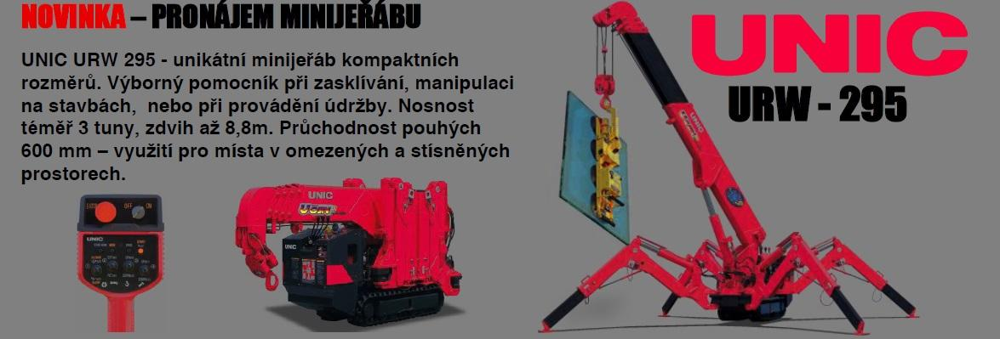
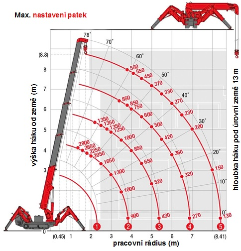
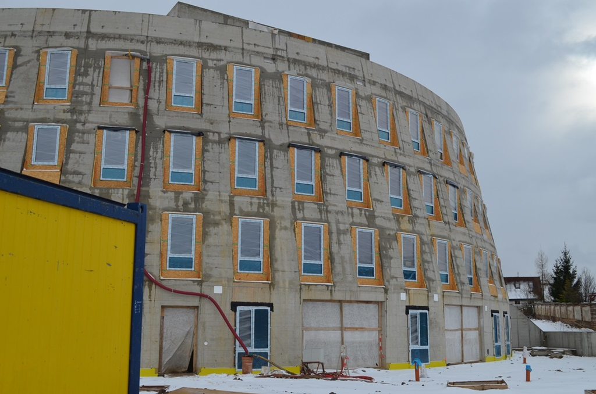
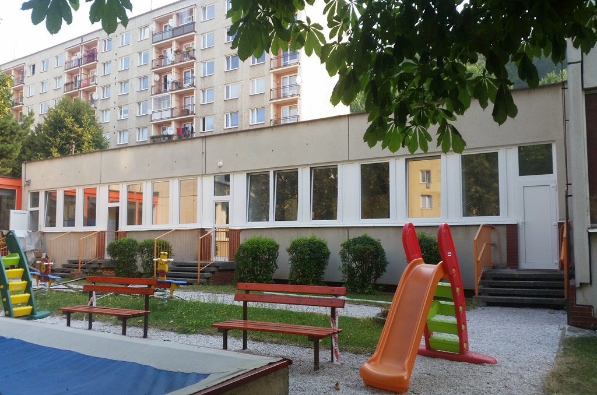
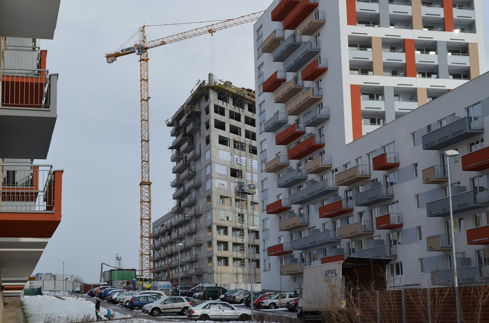
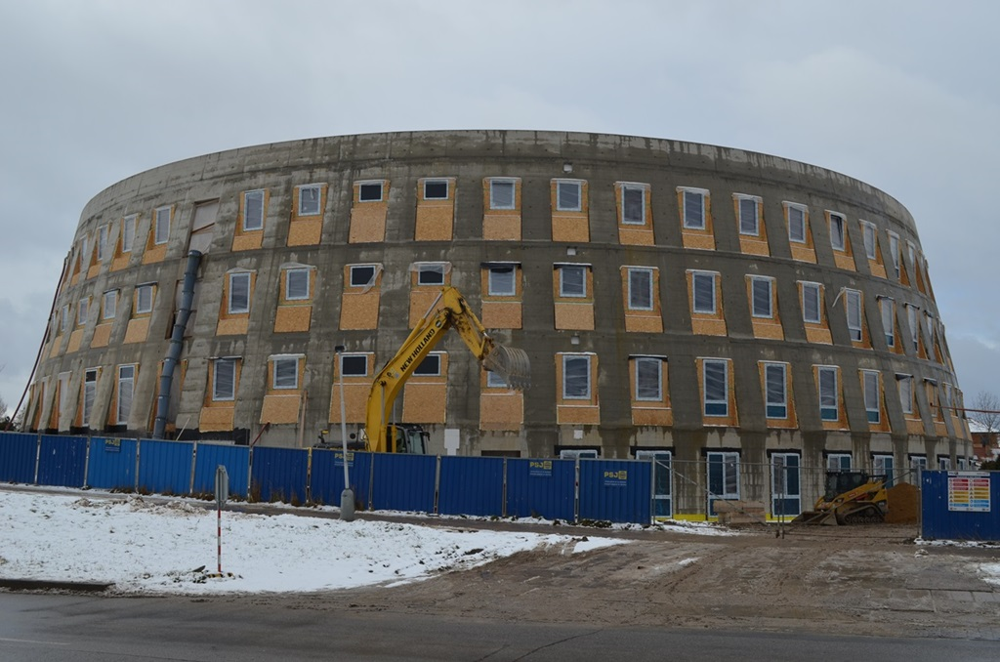

Nosnost 2.9 t
Pronájem minijeřábu UNIC URW-295 s obsluhou
Kompaktní pásový minijeřáb s průjezdnou šířkou 600 mm pro montáže velkoformátových skel v interiérech i na těžce přístupných stavbách.
Šířka: 600 mm
Dosah: 8,41 m
Pohon: 380V/Diesel
Zajišťujeme odbornou montáž hliníkových a dřevěných oken, strukturálních prosklených fasád a pronájem pásového minijeřábu UNIC URW-295 o šířce 600 mm s duálním pohonem a vakuovými savkami.

Bezemisní tichý provoz v interiérech, nákupních centrech, atriích i těžce přístupných terénech.
Díky kompaktním rozměrům projede minijeřáb standardními 80cm dveřmi. Variabilní polohování patek umožňuje stabilní ustavení na schodištích, terasách i ve svahu.
| Maximální nosnost | 2 900 kg při vyložení 1,4 m |
| Maximální pracovní rádius | 8,41 m |
| Maximální výška háku | 8,8 m (s krakorcem 9,8 m) |
| Transportní šířka stroje | 600 mm |
| Délka stroje v přepravním stavu | 2 690 mm |
| Výška stroje | 1 375 mm |
| Celková hmotnost | 1 850 kg (snadný převoz na vleku) |
| Pohon stroje | Duální: diesel motor + elektromotor 380V |
| Manipulační příslušenství | Vakuové savky na velkoformátové sklo |

Pracujeme v souladu s montážní normou ČSN 74 6077. Zajišťujeme novostavby, rekonstrukce i náročné výměny velkoformátových prosklení.
Kompaktní pásový minijeřáb s průjezdnou šířkou 600 mm pro montáže velkoformátových skel v interiérech i na těžce přístupných stavbách.

Fasády budovOdborné montáže sloupko-příčkových hliníkových fasád, prosklených plášťů, atrií a střešních světlíků pro komerční a veřejné stavby.

Eurookna IV78/92Přesná instalace dřevěných a dřevohliníkových oken do novostaveb i památkových objektů s přísným dodržením parotěsného napojení spáry.

Třída profilu AKompletní dodávky a montáže plastových oken pro bytové domy i komerční objekty včetně kompletního zednického začištění a ekologické likvidace.
Profesionální seřízení přítlaků, promazání celoobvodového kování, výměna zpuchřelého těsnění za silikonové a výměny prasklých izolačních skel.
Nezávislá kontrola technologických postupů při montáži oken a fasád na stavbách. Ochrana investora před skrytými vadami a budoucím zatékáním.
Zadejte požadované vyložení ramen jeřábu od osy otáčení a ověřte maximální povolenou nosnost pro bezpečný zdvih břemene.
Tento zdvih je plně v bezpečné zóně zátěžového diagramu UNIC URW-295. Vakuové savky a obsluha jsou k dispozici.
Ukázky našich montáží hliníkových fasád budov, prosklených celků i precizní práce s minijeřábem.

Kontaktujte naše jednatele pro rychlou cenovou kalkulaci a prověření dostupnosti techniky.
Montáže oken, fasád & pronájem minijeřábu UNIC